计算机系统
大作业
题 目 程序人生-Hello’s P2P
专 业 计算机科学与技术
学 号 1180301009
班 级 1803010
学 生 阚嘉良
指 导 教 师 史先俊
计算机科学与技术学院
2019年12月
摘要是论文内容的高度概括，应具有独立性和自含性，即不阅读论文的全文，就能获得必要的信息。摘要应包括本论文的目的、主要内容、方法、成果及其理论与实际意义。摘要中不宜使用公式、结构式、图表和非公知公用的符号与术语，不标注引用文献编号，同时避免将摘要写成目录式的内容介绍。
关键词：P2P；020；进程；计算机系统
本文主要是通过合理运用这个学期在计算机系统课程上学习的知识，分析研究hello程序在Linux下的P2P和020过程，通过熟练使用各种工具，学习Linux框架下整个程序的声明周期，加深对课本知识的印象。
目 录
P2P：Program to Process
在linux中，hello.c经过cpp的预处理、ccl的编译、as的汇编、ld的链接最终成为可执行目标程序hello，在shell中键入启动命令后，shell为其fork，产生子进程，产生子进程后shell为hello execve，于是hello便从Program（个人理解为程序项目）变为Process（进程），这便是P2P的过程。
2.O2O：Zero-0 to Zero-0
这里的020应该指的是Process在内存中From Zero to Zero。产生子进程后shell为hello execve，映射虚拟内存，进入程序入口后程序开始载入物理内存，然后进入 main函数执行目标代码，CPU为运行的hello分配时间片执行逻辑控制流。当程序运行结束后，shell父进程负责回收hello进程，内核删除相关数据结构，这便是020的过程。
硬件环境：Core i7-8770U
开发和调试工具： Codeblocks、Visual Studio 2017、gdb、gedit
文件名 | 作用 |
hello.c | 源程序 |
hello.i | 预处理文件 |
hello.s | 根据hello.i编译得到的.s文件 |
hello.o | 可重定位目标程序 |
hello | 连接后的可执行文件 |
（第1章0.5分）
预处理器(cpp)根据以#开头的命令，修改原始的C程序。比如hello.c中第6行的#include<stdio.h>命令高速预处理器读取系统头文件stdio.h的内容，并把它直接插入程序文本中。结果就得到了另一个C程序，通常是以.i作为文件拓展名
gcc -E hello.c -o hello.i
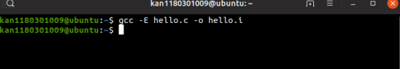
修改得到的C程序hello.i已经从原来hello.c的534个字节增加到63364个字节，并且增加到3110行。再用gedit打开hello.i，发现在main函数在文件的最后部分。
而在main函数之前，预处理器(cpp)读取头文件stdio.h 、stdlib.h 、和unistd.h中的内容，三个系统头文件依次展开。比如stdio.h的展开，打开usr/include/stdio.h发现了其中还含有#开头的宏定义等，预处理器会对此继续递归展开，最终的.i程序中没有#define，并且针对#开头的条件编译语句，cpp根据#if后面的条件决定需要编译的代码。
本章介绍了hello.c的预处理阶段，根据预处理命令得到了修改后的hello.i程序，并且对hello.i程序进行了预处理结果解析，理解了预处理器读取系统头文件中内容，并把它插入程序文本中的过程
（第2章0.5分）
在这个阶段，编译器首先要检查代码的规范性，是否有语法错误等，以确定代码的实际要做的工作，再检查无误后，编译器（ccl）见文本文件hello.i翻译成文本文件hello.s，它包含一个汇编语言程序。该程序包含函数main的定义，语句以一种文本格式描述了一条低级机器语言指令。汇编语言位不同高级语言的不同编译器提供了通用的输出语言。
gcc -S hello.i -o hello.s
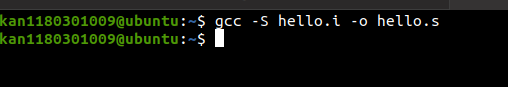
hello.s中的各种指令：
.file | 源文件名 |
.globl | 全局变量 |
.data | 数据段 |
.align | 对齐 |
.type | 指定是对象类型或是函数类型 |
.size | 大小 |
.long | 长整型 |
.section | 节头表 |
.rodata | 只读数据段 |
.string | 字符串 |
.text | 代码段 |
hello.s中C语言的数据类型有：局部变量，指针数组，无全局变量
int argc；argc是函数传入的第一个int型参数，存储在%edi中
int i；局部变量，通常保存在寄存器或是栈中。根据movl $0, -4(%rbp)操作可知i的数据类型占用了4字节的栈空间。
argv[1]、argv[2]和argv[3]都声明在.rodata只能读数据段中，并且给出了字符串的编码
在main函数第41行循环开始之前的第14行，i被存储到%ebx中，赋值为0
这里涉及一处调用系统函数atoi函数将argv[3]转换成int型的操作
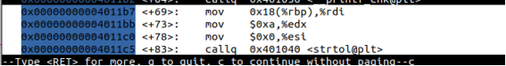
这里有一处，通过不断增加i的值，并与7不断比较的例子
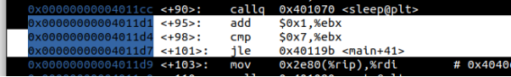
如果cmp按位比较算位操作/逻辑操作，那么在4的图中已经有了，并且已经加以说明了，除此之外没有位操作
第一处：看argc是否是4而进行的关系操作
第二处：在for循环中判断i是否到达临界条件而设计的
这里有将参数导入printf函数和atoi函数的部分，是将argv字符串数组导入这两个函数的过程，如下图：
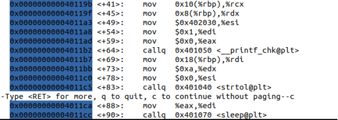
判断argc是否为4而进行的控制转移：jne
判断i是否小于等于7而进行的控制转移：jle
还有一处：jmp
这里是如果判断argc是4，那么不必进行下面的部分代码，直接跳到for循环即可
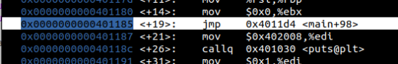
1.main函数：
参数传递：传入参数argc和argv，分别用寄存器%rdi和%rsi存储。
函数调用：被系统启动函数调用。
函数返回：设置%eax为0并且返回，对应return 0 。
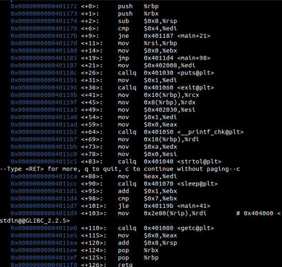
2.printf函数：
参数传递：call puts时只传入了字符串参数首地址；for循环中call printf时传入了 argv[1]和argc[2]的地址。
函数调用：for循环中被调用
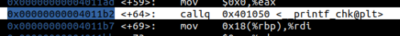
3.exit函数：
参数传递：传入的参数为1，再执行退出命令
函数调用：if判断条件满足后被调用
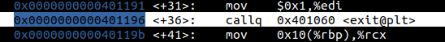
4.sleep函数：
参数传递：传入参数atoi函数返回值，传递控制call sleep
函数调用：for循环下被调用
5.getchar
传递控制：call getchar
函数调用：在main中被调用
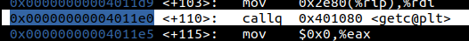
参数传递：argv[3]
函数调用：在main函数中被调用
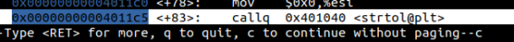
本章我们主要介绍了编译器是如何将文本编译成汇编代码的。可以发现，编译器并不是死板的按照我们原来文本的顺序，逐条语句进行翻译下来的。编译器在编译的过程中，不近会对我们的代码做一些隐式的优化，而且会将原来代码中用到的跳转，循环等操作操作用控制转移等方法进行解析。最后生成我们需要的hello.s文件。
（第3章2分）
概念：
汇编器（as）将hello.s文件翻译成机器语言指令，把这些指令打包成一种叫做可重定位目标程序的格式，并将结果保存在hello.o中。这里的hello.o是一个二进制文件。
作用：
我们知道，汇编代码也只是我们人可以看懂的代码，而机器并不能读懂，真正机器可以读懂并执行的是机器代码，也就是二进制代码。汇编的作用就是将我们之前再hello.s中保存的汇编代码翻译成可以攻机器执行的二进制代码，这样机器就可以根据这些01代码，真正的开始执行我们写的程序了。
gcc -c hello.s -o hello.o
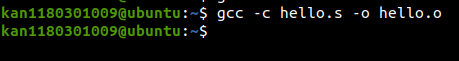
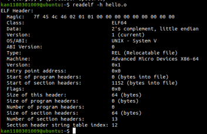
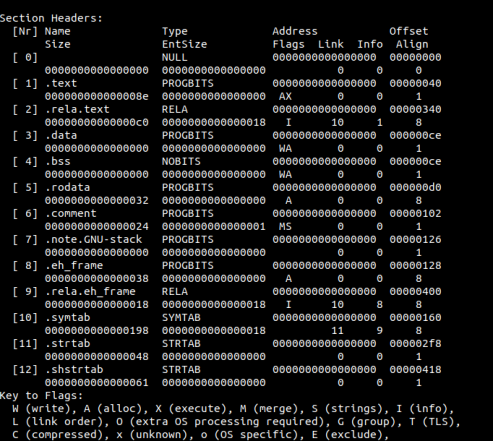
r_offset:
此成员指定应用重定位操作的位置。不同的目标文件对于此成员的解释会稍有不同。
r_info:
此成员指定必须对其进行重定位的符号表索引以及要应用的重定位类型。
重定位类型特定于处理器。重定位项的重定位类型或符号表索引是将 ELF32_R_TYPE 或 ELF32_R_SYM 分别应用于项的r_info成员所得的结果。
r_addend:
此成员指定常量加数，用于计算将存储在可重定位字段中的值。
重定位类型：
R_X86_64_PC3：重定位一个使用32位PC相对地址的引用。在指令中编码的32位值加上PC的当前运行时值，得到有效地址。
R_X86_64_32：重定位一个使用32位PC绝对地址的引用。直接使用在指令中编码的32位值作为有效地址。
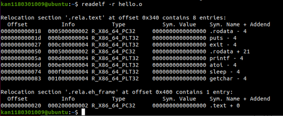
4.符号表
它存放在程序中定义和引用的函数和全局变量的信息,.symtab符号表不包含局部变量的条目。
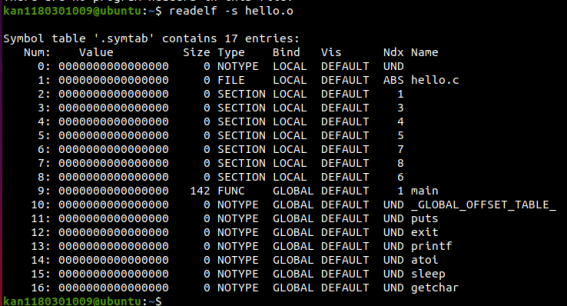
Objdump后的汇编代码：
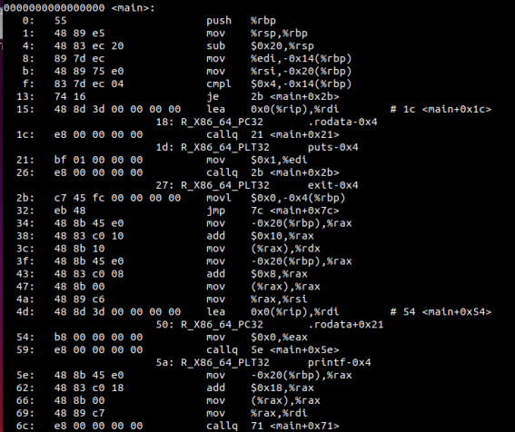
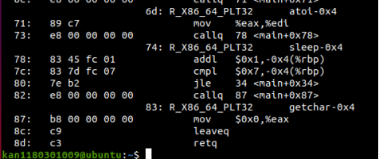
通过与原文件对比后发现：
1）过程调用的符号，被替换为相对寻址。
2）条件转移中的.L标记被准确的相对main的开始的偏移所代替。
3）全局变量的符号，被替换为相对寻址。
值得注意的是，由于还未进行链接，上述的相对寻址全都暂时被0x0(%rip)代替。
此外，可以发现，.text中的各个汇编指令的作用效果没有太大变化。
（第4章1分）
定义：
链接是通过链接器（ld）将各种代码和数据片断收集并组合成一个单一文件的过程。这个文件可以被加载（复制）到内存并执行。
作用：
因为有了链接这个概念的存在，所以我们的代码才回变得比较方便和简洁，同时可移植性强，模块化程度比较高。因为链接的过程可以使我们将程序封装成很多的模块，我们在变成的过程中只用写主程序的部分，对于其他的部分我们有些可以直接调用模块，就像C中的printf一样。
作为编译的多后一步链接，就是处理当前程序调用其他模块的操作，将该调用的模块中的代码组合到相应的可执行文件中去。
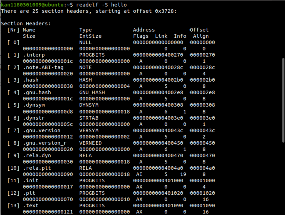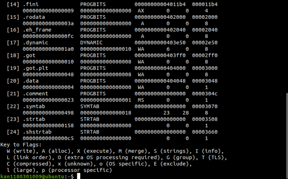
图中保存了可执行文件hello中的各个节的信息。可以看到hello文件中的节的数目比hello.o中多了很多，说明在链接过后有很多文件有添加了进来。下面列出每一节中各个信息条目的含义：
名称和大小这个条目中存储了每一个节的名称和这个节在重定位文件种所占的大小。
地址这个条目中，保存了各个节在重定位文件中的具体位置也就是地址。 偏移量这一栏中保存的是这个节在程序里面的地址的偏移量，也就是相对地址。
1.连接后的hello属于elf可执行目标文件，所包含的各类信息如下：
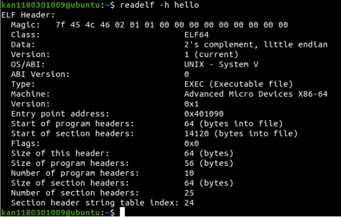
2.虚拟地址空间各段信息：
（1）.PDHR:起始位置为0x400040,大小为0x1c0
（2）.INTERP:起始位置为0x400200,大小为0x1c
（3）.LOAD：起始位置为0x400000，大小为0x81c
（4）.LOAD：起始位置为0x600e00,大小为0x258
1.hello中增加了许多节和被调用的函数。
2.对rodata的引用：在hello.o的反汇编文件中对printf参数字符串的引用使用全0替代。在hello中则使用确定地址，这是因为链接后全局变量的地址能够确定。
3.hello.o中main 的地址从0开始，hello中main的地址不再是0.库函数的代码都链接到了程序中。
Hello.o的反汇编：
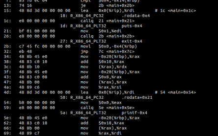
Hello的反汇编：
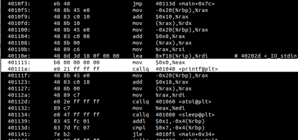
Hello.o中空白的函数处全部都在可执行文件hello中有了填补
（以下格式自行编排，编辑时删除）
使用edb执行hello，说明从加载hello到_start，到call main,以及程序终止的所有过程。请列出其调用与跳转的各个子程序名或程序地址。
程序名称 | 程序地址 |
ld-2.27.so!_dl_start | 0x7fe7a8177030 |
ld-2.27.so!_dl_init | 0x7fe7a81859e0 |
hello!_start | 0x400500 |
libc-2.27.so!_libc_start_main | 0x7fe7a7f98a80 |
-libc-2.27.so!_cxa_atexit | 0x7fe7a7f9ac43 |
-libc-2.27.so!_libc_csu_init | 0x4005c0 |
hello!_init | 0x400488 |
libc-2.27.so!_setjmp | 0x7fe7a7884c10 |
-libc-2.27.so!_sigsetjmp | 0x7fe7a7884b70 |
--libc-2.27.so!_sigjmp_save | 0x7fe7a7884bd0 |
hello!main | 0x400532 |
hello!puts@plt | 0x4004b0 |
hello!puts@plt | 0x4004e0 |
*hello!printf@plt | — |
*hello!sleep@plt | — |
*hello!getchar@plt | — |
ld-2.27.so!_dl_runtime_resolove_xsave | 0x7fe7a784e680 |
-ld-2.27.so!_dl_fixup | 0x7fe7a7846df0 |
--ld-2.27.so!_dl_lookup_symbol_x | 0x7fe7a78420b0 |
libc-2.27.so!exit | 0x7fe7a7889128 |
程序调用一个由共享库定义的函数时，编译器没有办法预测这个函数的运行时地址，因为定义它的共享模块在运行时可以加载到任意位置。GNU编译系统使用延迟绑定的技术解决这个问题，将过程地址的延迟绑定推迟到第一次调用该过程时。
延迟绑定要用到全局偏移量表（GOT）和过程链接表（PLT）两个数据结构。如果一个目标模块调用定义在共享库中的任何函数，那么它就有自己的GOT和PLT。
PLT：PLT是一个数组，其中每个条目是16字节代码。PLT[0]是一个特殊条目，跳转到动态链接器中。每个条目都负责调用一个具体的函数。PLT[[1]]调用系统启动函数 （__libc_start_main）。从PLT[[2]]开始的条目调用用户代码调用的函数。
GOT：GOT是一个数组，其中每个条目是8字节地址。和PLT联合使用时，GOT[0]和GOT[[1]]包含动态链接器在解析函数地址时会使用的信息。GOT[[2]]是动态链接器在ld-linux.so模块中的入口点。其余的每个条目对应于一个被调用的函数，其地址需要在运行时被解析。
链接的过程，是将原来的只保存了你写的函数的代码与代码用所用的库函数合并的一个过程。在这个过程中链接器会为每个符号、函数等信息重新分配虚拟内存地址，方法就是用每个.o文件中的重定位节与其它的节想配合，算出正确的地址。同时，将你会用到的库函数加载（复制）到可执行文件中。这些信息一同构成了一个完整的计算机可以运行的文件。链接让我们的程序做到了很好的模块化，我们只需要写我们的主要代码，对于读入、IO等操作，可以直接与封装的模块相链接，这样大大的简化了代码的书写难度。
（第5章1分）
进程是一个执行中程序的实例。是系统进行资源分配和调度的基本单位，是操作系统结构的基础。
作用：进程的概念为我们提供这样一种假象，就好像我们的程序是系统中当前运行的唯一程序一样，我们的程序好像是独占地使用处理器和内存，处理器好像是无间断地一条接一条地执行我们程序中的指令，我们程序中的代码和数据好像是系统内存中唯一的对象。
Shell俗称壳，是指“为使用者提供操作界面”的软件（命令解析器）。它接收用户命令，然后调用相应的应用程序。
1.功能：命令解释。Linux系统中的所有可执行文件都可以作为Shell命令来执行。
2.处理流程：
1）当用户提交了一个命令后，Shell首先判断它是否为内置命令，如果是就通过Shell内部的解释器将其解释为系统功能调用并转交给内核执行。
2）若是外部命令或应用程序就试图在硬盘中查找该命令并将其调入内存，再将其解释为系统功能调用并转交给内核执行。
在终端中输入./hello 学号 姓名，shell判断它不是内置命令，于是会加载并运行当前目录下的可执行文件hello.此时shell通过fork创建一个新的子进程。新创建的子进程几乎但不完全与父进程相同。子进程得到与父进程用户级虚拟地址空间相同的（但是独立的）一份副本，包括代码和数据段、堆、共享库和用户栈。子进程还获得与父进程任何打开文件描述符相同的副本，这就意味着当父进程调用fork时，子进程可以读写父进程中打开的任何文件。子进程与父进程有不同的pid。fork被调用一次，返回两次。在父进程中fork返回子进程的pid，在子进程中fork返回0.父进程与子进程是并发运行的独立进程。
execve函数在新创建的子进程的上下文中加载并运行hello程序。execve函数加载并运行可执行目标文件filename，且带参数列表argv和环境变量列表envp。只有发生错误时execve才会返回到调用程序。所以，execve调用一次且从不返回。
加载并运行hello需要以下几个步骤：
1.删除已存在的用户区域。删除当前进程虚拟地址的用户部分中已存在的区域结构。
2.映射私有区域。为新程序的代码、数据、bss和栈区域创建新的区域结构。所有这些新的区域都是私有的、写时复制的。代码和数据区被映射为hello文件中的.text和.data区。bss区域是请求二进制零的，映射到匿名文件，其大小包含在hello中。栈和堆区域也是请求二进制零的，初始长度为零。
3.映射共享区域。如果hello程序与共享对象链接，那么这些对象都是动态链接到这个程序的，然后再映射到用户虚拟地址空间中的共享区域内。
4.设置程序计数器。设置当前进程上下文中的程序计数器，使之指向代码区域的入口点。下一次调度这个进程时，它将从这个入口点开始执行。
系统中的每个程序都运行在某个进程的上下文中。上下文是由程序正确运行所需的状态组成的。这个状态包括存放在内存中的程序的代码和数据，它的栈、通用目的寄存器的内容、程序计数器、环境变量以及打开文件描述符的集合。
一个进程执行它的控制流的一部分的每一时间段叫做时间片。
处理器通常用某个控制寄存器的一个模式位来提供用户模式和内核模式的功能。设置了模式位时，进程就运行在内核模式中，该进程可以执行指令集中的任何指令，可以访问系统中的任何内存位置。没有设置模式位时，进程就运行在用户模式中，用户模式中的进程不允许执行特权指令。
在进程执行的某些时刻，内核可以决定抢占当前进程，并重新开始一个先前被抢占了的进程的决定叫做调度。
程序在执行sleep函数时，sleep函数首先会调用atoi函数将argv[3]中的字符或字符串转换为整型数字，此时sleep函数调用wait或waitpid函数挂起直到atoi函数执行完成并返回一个数字，此时sleep函数作为父进程回收执行atoi函数的子进程。
此时，在sleep函数获取参数后，sleep系统调用显式地请求让调用进程休眠，调度器抢占当前进程，并使用一种称为上下文切换的机制来将控制转移到新的进程。sleep的倒计时结束后，控制会回到hello进程中。程序调用getchar()时，内核可以执行上下文切换，将控制转移到其他进程。getchar()的数据传输结束之后，引发一个中断信号，控制回到hello进程中
hello执行过程中会出现哪几类异常，会产生哪些信号，又怎么处理的。
程序运行过程中可以按键盘，如不停乱按，包括回车，Ctrl-Z，Ctrl-C等，Ctrl-z后可以运行ps jobs pstree fg kill 等命令，请分别给出各命令及运行结截屏，说明异常与信号的处理。
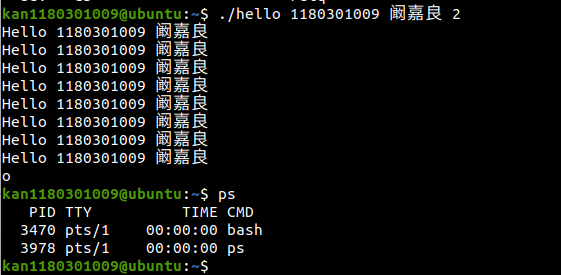
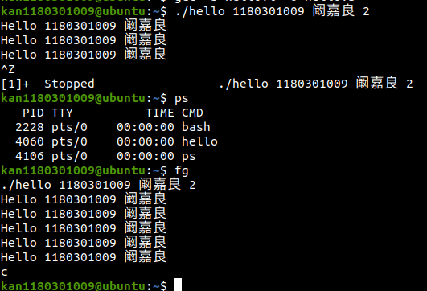
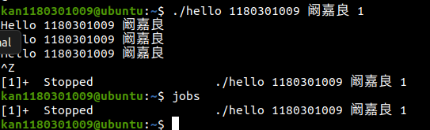
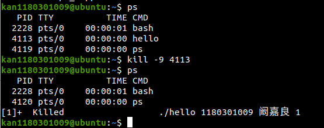
如图，平时显示进程已经成功被杀死
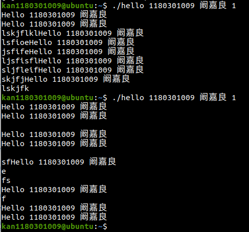
信号：SIGINT
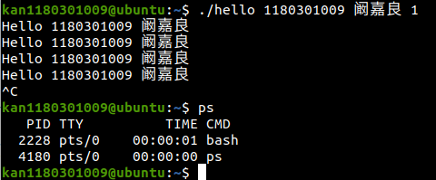
本章中阐述了进程的概念以及他在计算机中具体是如何在使用的。其次，还介绍了如何利用shell这个平台来对进程进行监理调用或发送信号等一系列操作。
（第6章1分）
逻辑地址：在有地址变换功能的计算机中，访内指令给出的地址 (操作数) 叫逻辑地址，也叫相对地址。要经过寻址方式的计算或变换才得到内存储器中的实际有效地址，即物理地址。是hello.o中的相对偏移地址。
线性地址：线性地址（Linear Address）是逻辑地址到物理地址变换之间的中间层。在分段部件中逻辑地址是段中的偏移地址，然后加上基地址就是线性地址。
虚拟地址：程序访问存储器所使用的逻辑地址称为虚拟地址。是hello里的虚拟内存地址。
物理地址：在存储器里以字节为单位存储信息，为正确地存放或取得信息，每一个字节单元给以一个唯一的存储器地址，称为物理地址。是hello里虚拟内存地址对应的物理地址。
1.基本原理：
在段式存储管理中，将程序的地址空间划分为若干个段(segment)，这样每个进程有一个二维的地址空间。在段式存储管理系统中，为每个段分配一个连续的分区，而进程中的各个段可以不连续地存放在内存的不同分区中。程序加载时，操作系统为所有段分配其所需内存，这些段不必连续，物理内存的管理采用动态分区的管理方法。
在为某个段分配物理内存时，可以采用首先适配法、下次适配法、最佳适配法等方法。
在回收某个段所占用的空间时，要注意将收回的空间与其相邻的空间合并。
段式存储管理也需要硬件支持，实现逻辑地址到物理地址的映射。
程序通过分段划分为多个模块，如代码段、数据段、共享段：
–可以分别编写和编译
–可以针对不同类型的段采取不同的保护
–可以按段为单位来进行共享，包括通过动态链接进行代码共享
这样做的优点是：可以分别编写和编译源程序的一个文件，并且可以针对不同类型的段采取不同的保护，也可以按段为单位来进行共享。
总的来说，段式存储管理的优点是：没有内碎片，外碎片可以通过内存紧缩来消除；便于实现内存共享。缺点与页式存储管理的缺点相同，进程必须全部装入内存。
2.段式管理的数据结构：
为了实现段式管理，操作系统需要如下的数据结构来实现进程的地址空间到物理内存空间的映射，并跟踪物理内存的使用情况，以便在装入新的段的时候，合理地分配内存空间。
·进程段表：描述组成进程地址空间的各段，可以是指向系统段表中表项的索引。每段有段基址(baseaddress)，即段内地址。
线性地址到物理地址的转换是通过页的这个概念完成的。线性地址被分为以固定长度为单位的组，称为页。
首先 Linux 系统有自己的虚拟内存系统，其虚拟内存组织形式如图 7-4所示，Linux 将虚拟内存组织成一些段的集合，段之外的虚拟内存不存在因此不需要记录。内核为hello进程维护一个段的任务结构即图中的task_struct，其中条目mm指向一个mm_struct，它描述了虚拟内存的当前状态，pgd 指向第一级页表的基地址（结合一个进程一串页表），mmap指向一个vm_area_struct 的链表，一个链表条目对应一个段，所以链表相连指出了 hello 进程虚拟内存中的所有段。
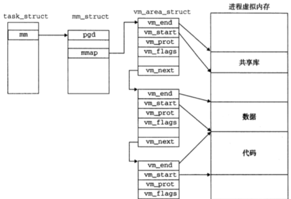
CPU芯片上有一个专门的硬件叫做内存管理单元（MMU），这个硬件的功能就是动态的将虚拟地址翻译成物理地址的。这个表示如何工作的呢，如图7-5所示。N为的虚拟地址包含两个部分，一个p位的虚拟页面偏移（VPO）和一个（n-p）位的虚拟页号（VPN）。MMU利用VPN来选择适当的PTE（页表条目）。接下来在对应的PTE中获得PPN（物理页号），将PPN与VPO串联起来，就得到了相应的物理地址
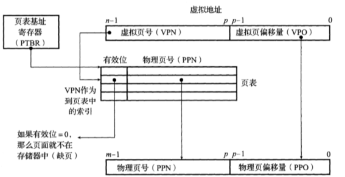
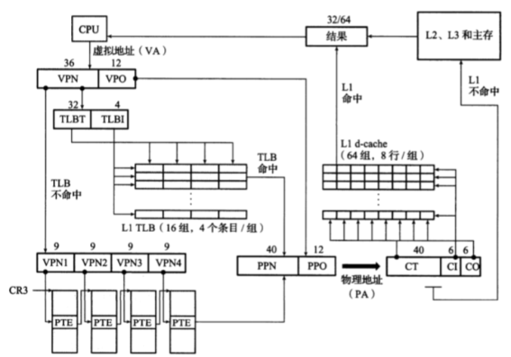
在7.3节中我们已经提到过了mm_struct和vm_area_struct这两个标记符，这里我们就需要用到他们。先来介绍一下：
mm_struct（内存描述符）：描述了一个进程的整个虚拟内存空间。
vm_area_struct（区域结构描述符）：描述了进程的虚拟内存空间的一个区间。
在用fork创建内存的时候，我们需要以下三个步骤：
1：创建当前进程的mm_struct，vm_area_struct和页表的原样副本。
2：两个进程的每个页面都标记为只读页面。
3：两个进程的每个vm_area_struct都标记为私有，这样就只能在写入时复制。
execve函数在shell中加载并运行包含在可执行目标文件hello中的程序，用hello程序有效的替代了当前程序。加载并运行hello需要以下几个步骤：
1：删除已存在的用户区域。删除shell虚拟地址的用户部分中的已存在的区域结构。
2：映射私有区域。为hello的代码、数据、bss 和栈区域创建新的区域结构。所有这些新的区域都是私有的、写时复制的。代码和数据区域被映射为hello 文件中的.text和.data 区。bss 区域是请求二进制零的，映射到匿名文件，其大小包含在hello 中。栈和堆区域也是请求二进制零的，初始长度为零。图7.7 概括了私有区域的不同映射。
3：映射共享区域。如果hello程序与共享对象（或目标）链接，比如标准C 库libc. so, 那么这些对象都是动态链接到这个程序的，然后再映射到用户虚拟地址空间中的共享区域内。
4：设置程序计数器(PC) 。execve 做的最后一件事情就是设置当前进程上下文中的程序计数器，使之指向代码区域的入口点。
1.隐式空闲链表：
空闲块通过头部中的大小字段隐含地连接着。分配器可以通过遍历堆中所有的块，从而间接地遍历整个空闲块的集合。
（1）放置策略：首次适配、下一次适配、最佳适配。
首次适配从头开始搜索空闲链表，选择第一个合适的空闲块。下一次适配从上一次查询结束的地方开始。最佳适配检查每个空闲块，选择适合所需请求大小的最小空闲块。
（2）合并策略：立即合并、推迟合并。
立即合并就是在每次一个块被释放时，就合并所有的相邻块；推迟合并就是等到某个稍晚的时候再合并空闲块。
带边界标记的合并:
在每个块的结尾添加一个脚部，分配器就可以通过检查它的脚部，判断前面一个块的起始位置和状态，从而使得对前面块的合并能够在常数时间之内进行。
2.显式空闲链表
每个空闲块中，都包含一个pred（前驱）和succ（后继）指针。使用双向链表使首次适配的时间减少到空闲块数量的线性时间。
空闲链表中块的排序策略：一种是用后进先出的顺序维护链表，将新释放的块放置在链表的开始处，另一种方法是按照地址顺序来维护链表，链表中每个块的地址都小于它后继的地址。
分离存储：维护多个空闲链表，每个链表中的块有大致相等的大小。将所有可能的块大小分成一些等价类，也叫做大小类。
分离存储的方法：简单分离存储和分离适配。
本章讨论了存储器地址空间，段式管理、页式管理，TLB与四级页表支持下的VA到PA的变换，三级Cache支持下的物理内存访问，hello进程fork时和execve时的内存映射，缺页故障与缺页中断处理和动态存储分配管理。
（第7章 2分）
1.打开文件：一个应用程序通过要求内核打开相应的文件，来宣告它想要访问一个I/O设备。内核返回一个小的非负整数，叫做描述符，它在后续对此文件的所有操作中标识这个文件。内核记录有关这个打开文件的所有信息。应用程序只需记住这个描述符。
2.Linux shell创建的每个进程开始时都有三个打开的文件：标准输入、标准输出和标准错误。
3.改变当前的文件位置：对于每个打开的文件，内核保持着一个文件位置k，初始为0.这个文件位置是从文件开头起始的字节偏移量。应用程序能够通过执行seek操作，显式地设置文件的当前位置为k。
4.读写文件：一个读操作就是从文件复制n>0个字节到内存，从当前文件位置k开始，然后将k增加到k+n。给定一个大小为m字节的文件，当k>=m时执行读操作会触发一个称为end-of-file（EOF）的条件，应用程序能检测到这个条件。在文件结尾处并没有明确的“EOF符号”。
类似地，写操作就是从内存复制n>0个字节到一个文件，从当前文件位置k开始，然后更新k。
5.关闭文件：当应用完成了对文件的访问之后，它就通知内核关闭这个文件。作为响应，内核释放文件打开时创建的数据结构，并将这个描述符恢复到可用的描述符池中。无论一个进程因为何种原因终止时，内核都会关闭所有打开的文件并释放它们的内存资源。
函数：
1.int open(char *filename, int flags, mode_t mode)
进程通过调用open函数来打开一个已存在的文件或者创建一个新文件。open函数将filename转换为一个文件描述符，而且返回描述符数字。flags参数指明了进程打算如何访问这个文件。mode参数指定了新文件的访问权限位。
2.int close(int fd)
进程通过调用close函数关闭一个打开的文件。
3.ssize_t read(int fd, void *buf, size_t n)
应用程序通过调用read函数来执行输入。read函数从描述符为fd的当前文件位置复制最多n个字节到内存位置buf。返回值-1表示一个错误，返回值0表示EOF。否则返回值表示的是实际传送的字节数量。
4.ssize_t write(int fd, const void *buf, size_t n)
应用程序通过调用write函数来执行输出。write函数从内存位置buf复制至多n个字节到描述符fd的当前文件位置。
https://www.cnblogs.com/pianist/p/3315801.html
从vsprintf生成显示信息，到write系统函数，到陷阱-系统调用 int 0x80或syscall.
字符显示驱动子程序：从ASCII到字模库到显示vram（存储每一个点的RGB颜色信息）。
显示芯片按照刷新频率逐行读取vram，并通过信号线向液晶显示器传输每一个点（RGB分量）。
Printf代码：
1.int printf(const char *fmt, ...)
2.{
3. int i;
4. char buf[256];
5.
6. va_list arg = (va_list)((char*)(&fmt) + 4);
7. i = vsprintf(buf, fmt, arg);
8. write(buf, i);
9.
10. return i;
11.}
其中，va_list是一个字符指针，arg表示函数的第二个参数。
vsprintf的代码：
1.int vsprintf(char *buf, const char *fmt, va_list args)
2.{
3. char* p;
4. char tmp[256];
5. va_list p_next_arg = args;
6.
7. for (p=buf;*fmt;fmt++) {
8. if (*fmt != '%') {
9. *p++ = *fmt;
10. continue;
11. }
12.
13. fmt++;
14.
15. switch (*fmt) {
16. case 'x':
17. itoa(tmp, *((int*)p_next_arg));
18. strcpy(p, tmp);
19. p_next_arg += 4;
20. p += strlen(tmp);
21. break;
22. case 's':
23. break;
24. default:
25. break;
26. }
27. }
28.
29. return (p - buf);
30.}
vsprintf的作用是格式化。它接受确定输出格式的格式字符串fnt。用格式字符串对个数变化的参数进行格式化，产生格式化输出，并返回要打印的字符串的长度。
write的代码
mov eax, _NR_write
mov ebx, [esp + 4]
mov ecx, [esp + 8]
int INT_VECTOR_SYS_CALL
先给寄存器传了几个参数，然后通过系统调用sys_call
sys_call：
call save
push dword [p_proc_ready]
sti
push ecx
push ebx
call [sys_call_table + eax * 4]
add esp, 4 * 3
mov [esi + EAXREG - P_STACKBASE], eax
cli
ret
syscall将字符串中的字节从寄存器中通过总线复制到显卡的显存中，显存中存储的是字符的ASCII码。
字符显示驱动子程序：从ASCII到字模库到显示vram（存储每一个点的RGB颜色信息）。
显示芯片按照刷新频率逐行读取vram，并通过信号线向液晶显示器传输每一个点（RGB分量）。
1.int getchar(void)
2.{
3. static char buf[BUFSIZ];
4. static char *bb = buf;
5. static int n = 0;
6. if(n == 0)
7. {
8. n = read(0, buf, BUFSIZ);
9. bb = buf;
10. }
11. return(--n >= 0)?(unsigned char) *bb++ : EOF;
12.}
getchar函数调用read函数，将整个缓冲区都读到buf里，并将缓冲区的长度赋值给n。返回时返回buf的第一个元素，除非n<0。
异步异常-键盘中断的处理：键盘中断处理子程序。接受按键扫描码转成ascii码，保存到系统的键盘缓冲区。
getchar等调用read系统函数，通过系统调用读取按键ascii码，直到接受到回车键才返回。
系统级I/O完成了Hello一生的最后一步。
以文件为单位，保证了较高的读写速度。
在各个层次上，这样的分块抽象，极大地提高了计算机的处理性能。
（第8章1分）
预处理阶段：hello.c引用的所有外部的库和宏定义展开合并到一个 hello.i 的文本文件中。
编译阶段：hello.i文件编译成为汇编文件hello.s，形成汇编指令。
汇编阶段：将hello.s 文件汇编成为可重定位目标文件hello.o，这个文件是二进制文件，但仍需要重定位。
链接阶段：将hello.o与可重定位目标文件和动态链接库链接成为可执行程序hello，此时的hello可以被shell执行。
Shell：在 shell程序中输入./hello 1180301009 阚嘉良，shell解析命令行，调用 fork 为其创建一个子进程，调用execve函数，启动加载器，将hello加载进内存，此时的hello成为了一个进程。
执行阶段：hello按照时间片进行运行，相应各种信号和异常。在这个过程中：访存阶段：MMU将程序中的虚拟内存地址通过页表映射成物理地址。通过L1L2L3cache加快数据访问。
动态内存申请阶段：printf调用malloc函数向动态内存分配器申请堆中的内存。回收阶段：hello进程结束，成为僵尸进程，shell父进程回收子进程，内核删除这个进程的所有数据。
在整个过程中，我们的存储管理以及页表的使用，都离不开局部性对我们进行支持，可以说，局部性是现代计算机系统的构建基础。。
（结论0分，缺失 -1分，根据内容酌情加分）
hello.i | 预编译处理文件 |
Hello.s | 汇编文件 |
Hello.o | 由hello.c生成的可重定位文件 |
Hello | 链接后的可执行文件 |
Hello.c | 源文件 |
（附件0分，缺失 -1分）
为完成本次大作业你翻阅的书籍与网站等
[1] 深入理解计算机系统教材
[2] https://www.cnblogs.com/pianist/p/3315801.html
[3] https://www.cnblogs.com/wangcp-2014/p/5146343.html
[4] https://blog.csdn.net/ky_heart/article/details/51865526
[5] https://blog.csdn.net/weixin_43836778/article/details/90903213
[6] https://github.com/dylanmckay/vsprintf
（参考文献0分，缺失 -1分）